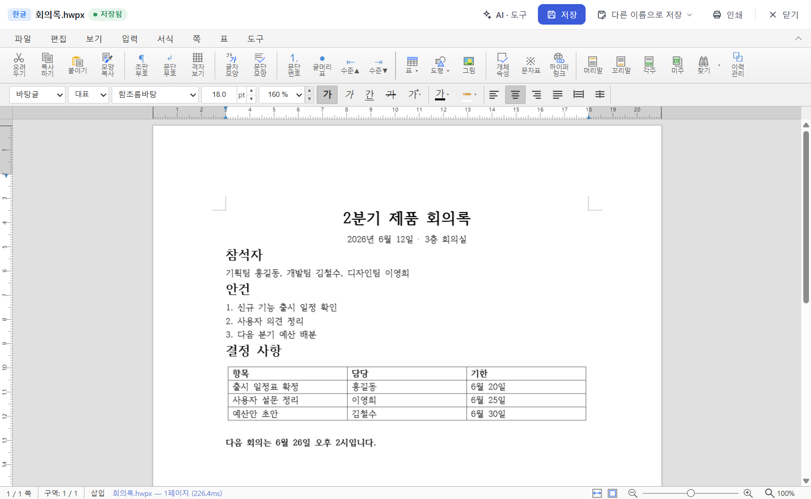
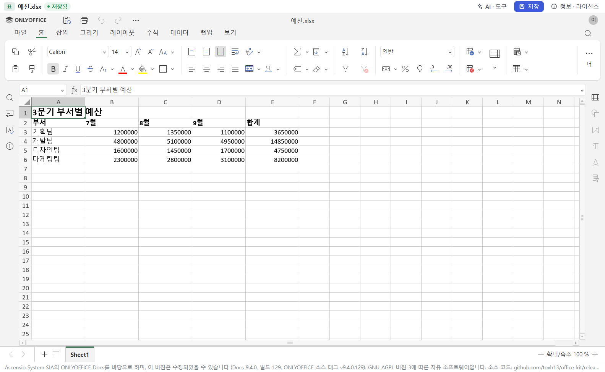
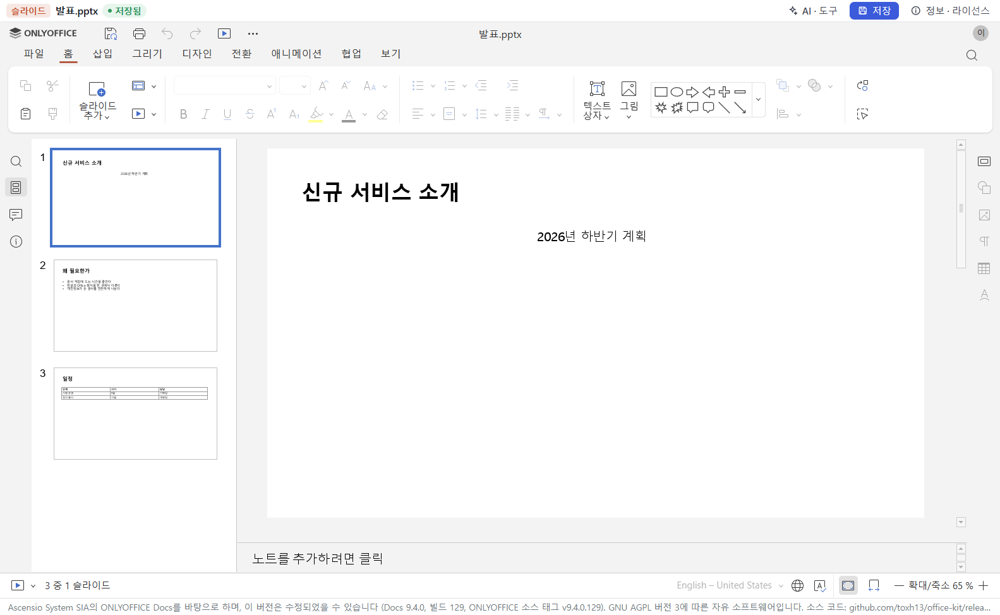
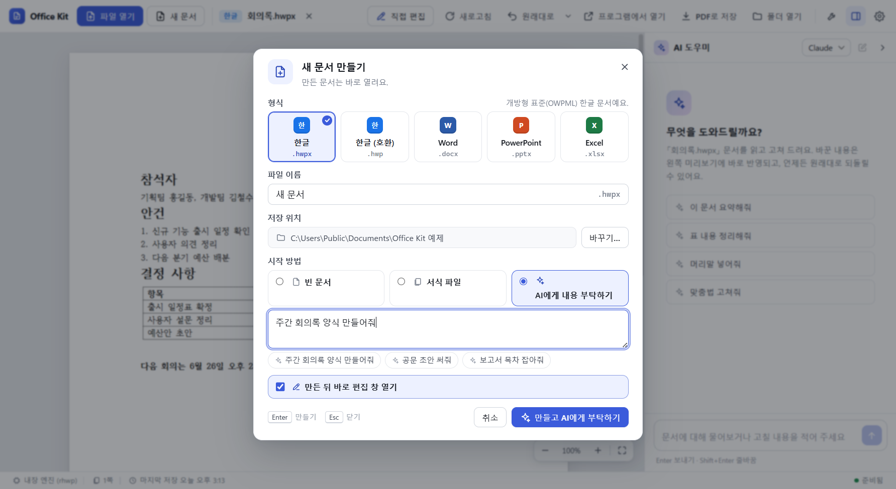

OFFICE KIT · 문서 도구
한글도 Word도, 창 하나에서
열고, 고치고, AI에게 부탁하는 Windows용 무료 문서 도구입니다.
- 가격
- 무료
- 운영체제
- Windows 10·11
- 소스
- 공개

한컴오피스나 MS Office가 없어도 직접 고칩니다
앱 안에 편집기가 들어 있어 인터넷 없이 동작합니다. 프로그램이 있으면 그 프로그램으로 원본 그대로 처리합니다.




“담당자 칸 채워줘”라고 말하면 됩니다
- 내 PC에 로그인한 Claude Code나 Codex를 그대로 씁니다.
- 고친 결과는 미리보기에 바로 보입니다.
- 바뀐 내용을 보고, 대화 전으로 되돌릴 수 있습니다.

보내기 전에 개인정보를 가립니다
주민등록번호, 전화번호, 이메일, 카드·계좌번호를 찾아 가린 사본을 원본 옆에 만듭니다. 인터넷과 AI 없이 동작합니다.

자주 하는 일은 단추 하나로
새 문서
빈 문서, 서식 파일, 또는 AI에게 내용을 부탁해 시작합니다.

PDF 합치기·나누기·돌리기
원본은 그대로 두고 새 PDF로 저장합니다.

설치
| 항목 | 내용 |
|---|---|
| 필요 | Windows 10 또는 11 (64비트) |
| AI 대화 (선택) | 직접 설치하고 로그인한 Claude Code 또는 Codex |
| 더 정확한 처리 (선택) | 한컴오피스, Word·Excel·PowerPoint. 없으면 내장 엔진을 씁니다. |
설치 파일에 코드 서명이 없어 처음 실행할 때 “Windows의 PC 보호” 창이 뜰 수 있습니다. 추가 정보를 누른 뒤 실행을 고르세요. 서명되지 않은 이유와 파일 확인 방법